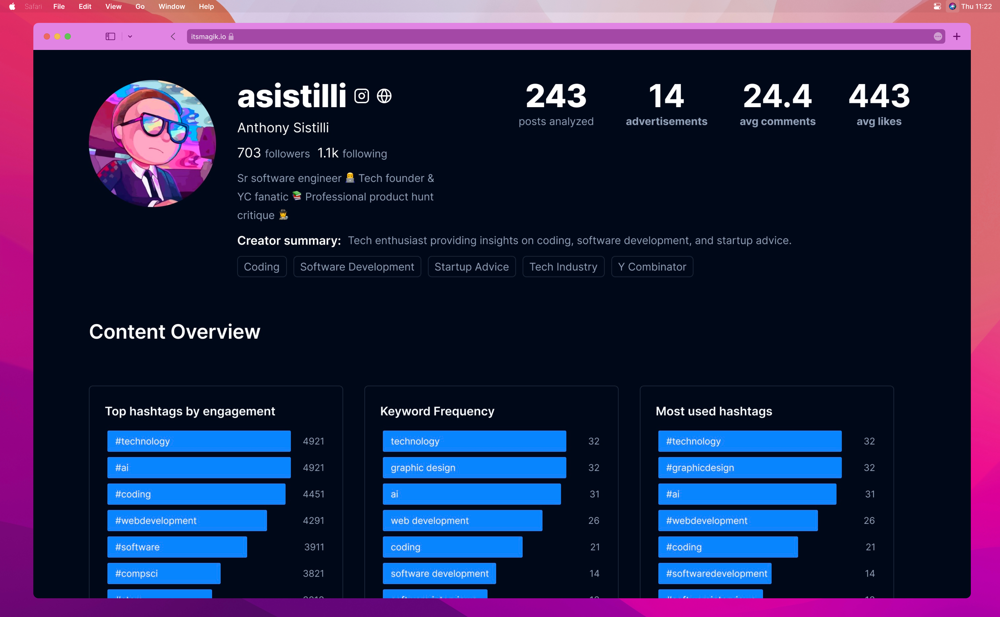
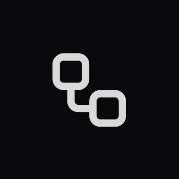

Information you need during on-call emergencies
Quickly link new on-call tickets to similar past incidents and their solutions. All directly in Slack the moment an incident happens.

Quick solutions, less stress
Fix emergencies fast
Save 20-30 minutes per on-call ticket - no more searching for relevant issues and runbooks
Universally compatible
Works with PagerDuty, Jira, or custom Slack alerts—Pandem integrates with any system

Secure for your org
We keep your data safe by taking top security measures.